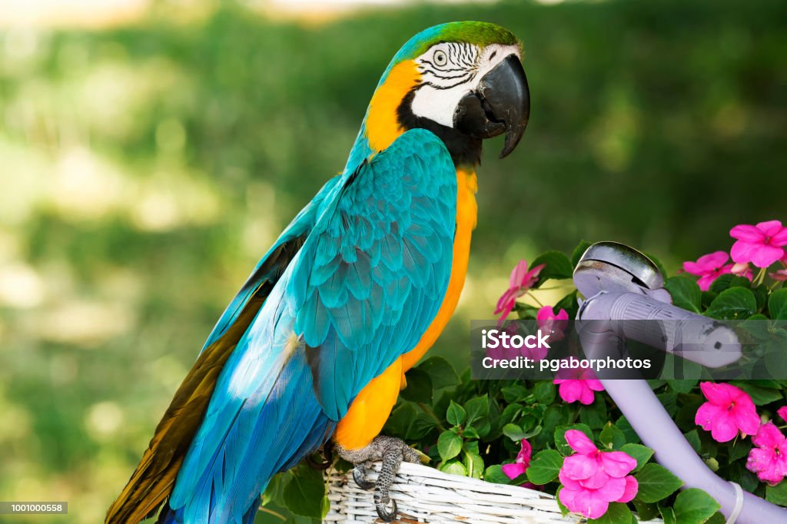

Parrot

Parrots are intelligent birds known for their bright colors and ability to mimic human speech.
- Scientific Name: Psittaciformes
- Average Length: 30 centimeters
- Average Lifespan: 40–60 years
- Habitat: Tropical regions
Parrots are social birds with strong beaks and curved claws. They are commonly found in forests and are popular as pets due to their intelligence and colorful feathers.
Rabbit

Rabbits are gentle herbivores known for their long ears and hopping movement.
- Scientific Name: Oryctolagus cuniculus
- Average Length: 40 cm
- Average Lifespan: 8–12 years
- Habitat: Meadows, forests, grasslands
Rabbits are social and active, often digging burrows and living in groups.